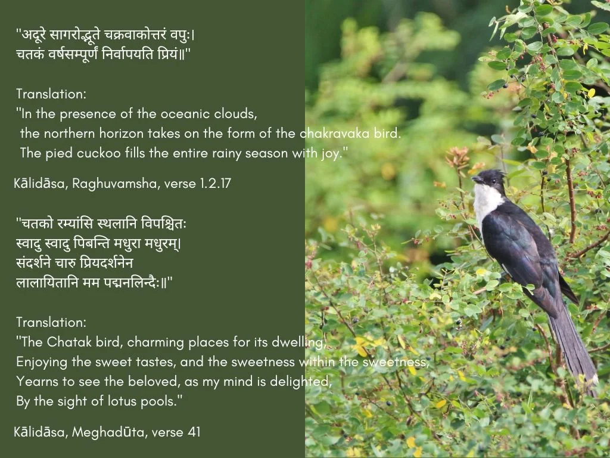
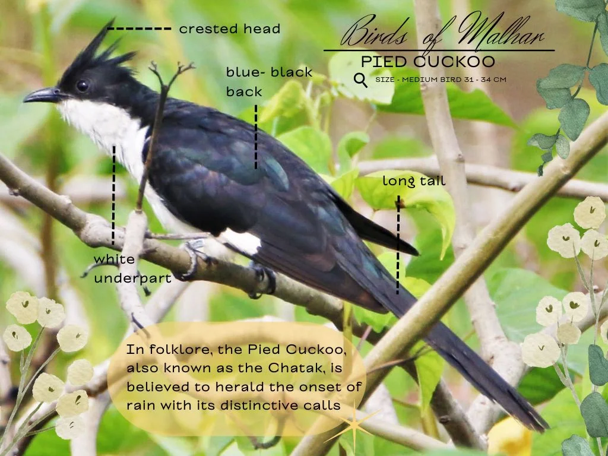
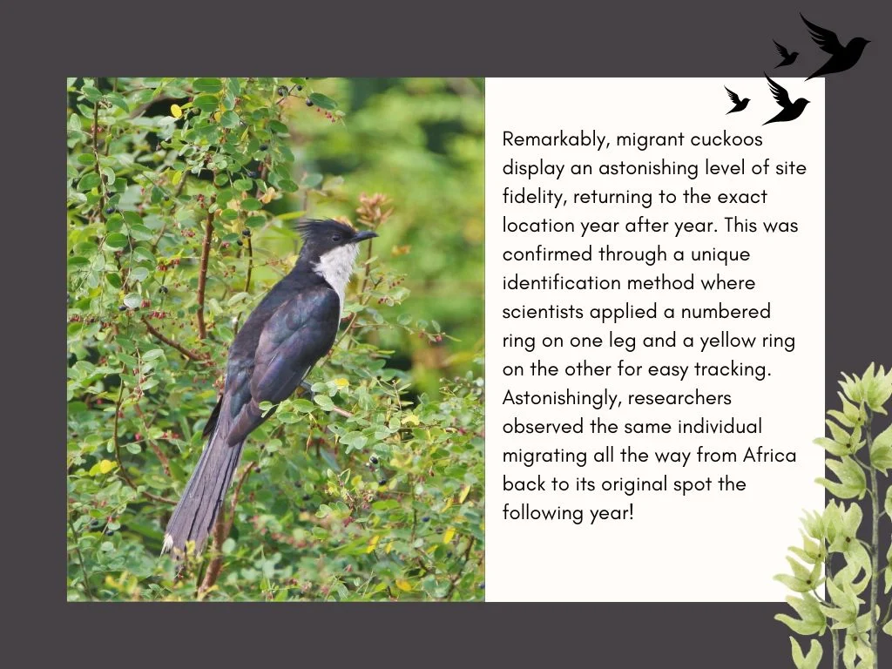
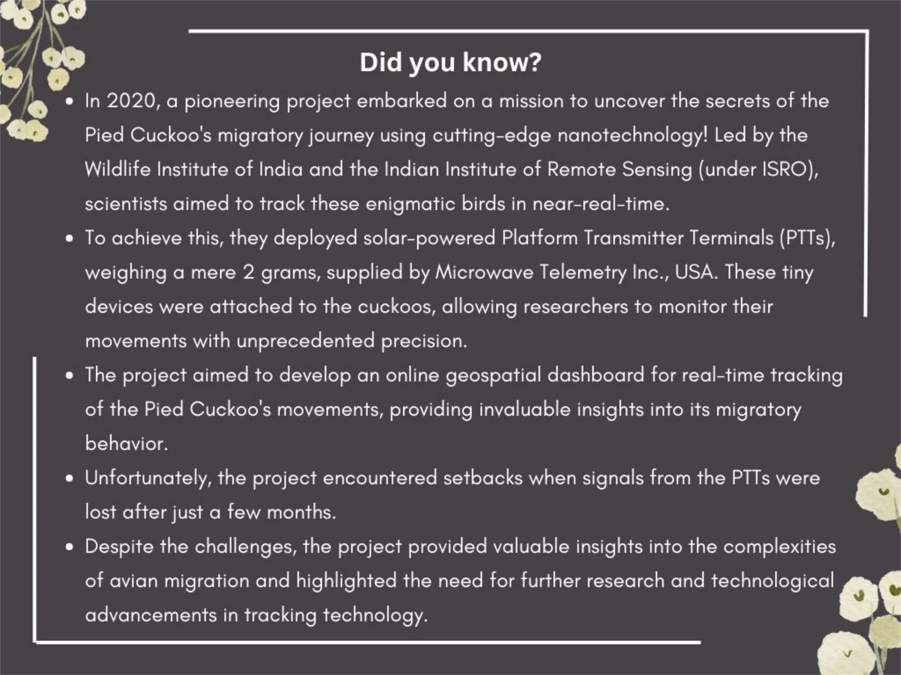

In our fast-paced lives, how often do we appreciate the gentle harmonies of nature that surrounds us? Melodious chirping of birds greeting the dawn, their dazzling displays of colour, and the myriad variety of these avian wonders often become fleeting moments of beauty, quickly replaced by the next pressing thought or task on the to-do list.
Nature, in all its diverse glory – from birds in the sky, trees anchoring the earth, to tiny insects that work tirelessly – bestows upon us countless gifts. Yet, more often than not, these treasures are relegated to the background amidst the din of our routine lives.
Envisioned with deep reverence for nature, the Malhar Eco-village stands as a beacon of harmonious living. It has been meticulously designed and developed to ensure that we coexist seamlessly with the wonders of nature. As Malhar’s rich tapestry of flora and fauna thrives, it becomes imperative for us to not only appreciate these invaluable inhabitants but also understand their roles in our ecosystem. By doing so, we can impart invaluable lessons to our children: the importance of respecting, caring for, and nurturing every aspect of nature.
Birds of Malhar
Birds, often heralded as indicators of a healthy ecosystem, play a pivotal role in the ecology. They assist in pollination, seed dispersal, insect control, and maintaining a balance within the food chain. In this carefully designed ecosystem, the presence of birds is not just a pleasing sight but a fundamental building block of a thriving environment.
The significance of having birds within the neighbourhood cannot be overstated. As symbols of biodiversity, their presence signifies the health of an environment and its ability to support various life forms. They serve as ambassadors of nature’s delicate balance, bridging the gap between the built environment and the wilderness that surrounds it.
Amidst the lush landscapes of Malhar, every tree, shrub, and waterbody hold stories of interdependence and harmony, serving as gentle reminders for us to look closer, listen, and understand. Thus, through this series, we introduce you to some of the remarkable avian residents that have found their home within the eco-village.
Let’s embark on this exploration together, recognising and celebrating the many ways in which these birds enrich our lives.
The Pied Cuckoo
Chasing the Monsoon Melodies
For poetry lovers and folklore enthusiasts across north India, few signs herald the arrival of the rejuvenating monsoon as joyously as the call of the Pied Cuckoo. This striking black and white bird with its distinctive crest has been immortalised in classical verses as the “Chatak” – a parched soul that can only quench its thirst with the season’s first raindrops.
As summer peaks across the northern plains, all eyes turn skyward in anticipation of the first Pied Cuckoos gliding their way from South Africa. Their haunting calls are eagerly awaited as the confirmation of the arrival of monsoon.
Kalidasa, ancient India’s greatest poet and playwright, used the Chatak as a metaphor for yearning and longing in his works, such as “Meghadoota” and “Raghuvamsha.” The Chatak’s connection to rain is not merely biological but carries spiritual and symbolic meanings, reflecting themes of devotion, purity, and the cyclical nature of life.

But what the lovelorn poets of the north may not realise is that just a few hundred miles away, their beloved muse leads a rather different life! While one migratory sub-species does make an impressive 6,500 km journey to the Himalayas every monsoon, the southern peninsula is home to its very own resident population of Pied Cuckoos.
Seen year round across forests, grasslands, and countryside from Kerala to Karnataka, these non-migratory Pied Cuckoos are revelling in their own rain-soaked quarters even as their migratory brethren are hailed as harbingers of monsoon up north. Talk about poetic injustice!
Physical Appearance
The Pied Cuckoo encompasses three sub-species worldwide, each distinguished by its distinct crest and striking black and white plumage. One subspecies resides in Africa, another undertakes migration between Africa and north India for breeding, while the third is a permanent resident in south India, commonly sighted throughout the year across forests and urban green spaces.
What unifies these sub-species is their characteristic black and white plumage, which gives rise to their name “pied,” signifying their dual-coloured appearance. This striking contrast has also led to them being dubbed “Jacobin cuckoos” due to the resemblance of their crest to the cowls worn by Jacobin monks.

Monsoon Breeders (June – August)
While their arrival dates may differ, the Pied Cuckoo population across India are united by their monsoon breeding cycles. As the countryside comes alive with lush greenery and replenished water sources, these cuckoos take advantage of the optimal breeding conditions.
Interestingly, these handsome birds lead highly deceptive lives as brood parasites. The female Pied Cuckoos make no attempt to build their own nests. Instead, they sneakily lay their eggs in the nests of other bird species, especially Babblers and Magpie Robins.
The unwitting Babbler parents then spend their summer selflessly raising a gargantuan Pied Cuckoo chick that soon dwarfs them in size! Observant birdwatchers delight in the comical scenes of these tiny feathered foster families scrambling to satisfy the gaping maws of their gluttonous adopted younglings.
Ecological Role
While their freeloading breeding strategies may seem less than virtuous, the Pied Cuckoos play an important role in the urban ecosystem. As a breed parasite, the cuckoos help regulate the population of their host species like Babblers. This prevents any one species from proliferating unchecked and diminishing resources for others.
Additionally, the Pied Cuckoos are frequent visitors to flowering trees, gardens and even birdhouses in pursuit of fresh fruit, nectar and insects. This makes them valuable pollination allies for the many flowering plants and trees found across the city’s parks and lakes. They further aid in regulating the insect population.


Whether celebrated as heralders of monsoon or taken for granted as year-round residents, the Pied Cuckoos play an integral role in the grand cycles of nature across the Indian subcontinent. Their contrasting stories speak to the wonderful diversity of life and how different survival strategies can emerge from the same species.
The next time you hear the bubbling, five-note call of the Chatak, pause and appreciate this master impersonator who has captured human imaginations for centuries. For in its talented fables of deception and poetry, the Pied Cuckoo embodies eternal truths of the changing seasons and the unwavering march of the natural world.
Explore the Series
If the tales of the pied cuckoo have captured your imagination, you’ll surely delight in exploring the other winged wonders featured in this series: